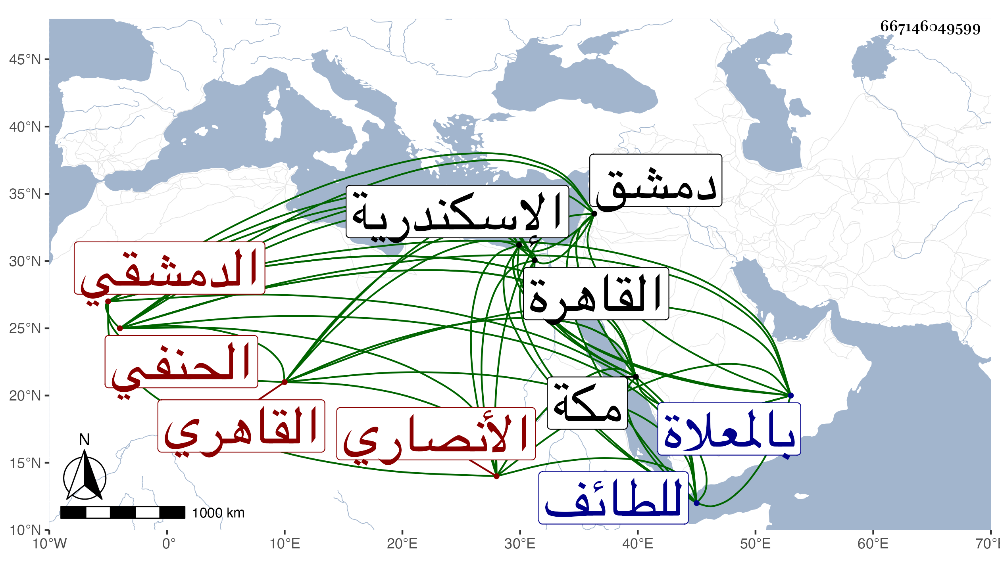

0902Sakhawi.DawLamic.ITO20230111-ara1.EIS1600.667146049599
Biography ID: 667146049599
136
محمد بن أحمد بن محمد بن عبد الله بن الحسين بن أبي التائب بن أبي العيس ابن أبي علي العز الأنصاري الدمشقي الأصل القاهري الحنفي ابن حفيد البدر المسند الشهير ويعرف كسلفه بابن أبي التائب . ولد في شعبان سنة خمس وسبعين وسبعمائة بالقاهرة ونشأ بها فحفظ القرآن وتلاه لأبي عمرو علي الشمس النشوى والعمدة والكنز الفرعي والمغني في الأصول وألفية النحو والتخليص وعرض بعضها على الصدر المناوي والمجد إسماعيل الحنفي ومحمود العجمي وغيرهم وأخذ الفقه عن البدر ابن خاص بك الشهاب العبادي وسمع دروسه في المنطق والشمس الحجاري الضرير والنحو عن المحب بن هشام والشمس البوصيري ، ولازم قارئ الهداية كثيرا فانتفع به في الفقه وأصله والعربية وغيرها وسمع علي ابن حاتم والشهابين ابن بنين والسويداوي والتنوخي وابن الشيخة والمليجي وابن أبي المجد والمجد إسماعيل الحنفي والسراج الكومي والتاج بن الفصيح والحلاوي وفتح الدين ابن الشهيد في آخرين ، وأجاز له النشاوري وجماعة ، وحدث سمع منه الفضلاء . وناب في القضاء عن البدر العيني فمن بعده وجلس بالمدرسة السيفية تجاه الصنادقيين بل ولى قضاء اسكندرية وقتا وشكرت سيرته في قضائه ودخل دمشق وحج نحو ست عشرة حجة وجاور وسمع بمكة على الجمال بن ظهيرة وتوجه للطائف لزيارة ابن عباس . ومات بمكة بعلة البطن في ثالث شوال سنة ست وأربعين ودفن بالمعلاة رحمة الله وسامحه .
